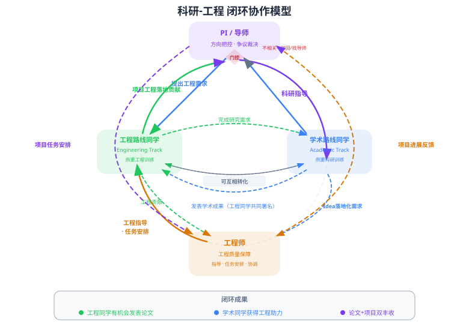

围绕真实系统问题开展研究与工程
课题组围绕并行执行与状态管理开展协作，当前重点建设国产算力上的推理系统。学术训练关注问题定义、机制设计与可复现实验；工程训练关注系统实现、性能分析与质量保障。同学可以根据兴趣与阶段调整侧重点，通过共同的代码、负载与实验连接研究和工程实践。
- 执行与状态：硬件感知执行、共享状态并发控制、在线迁移与恢复。
- 推理服务：请求调度、KV 状态管理、推理工作流与国产异构平台优化。
- 长期交互与持续更新：外部记忆、动态检索和图状态维护。
- 实验与应用：真实负载、性能评测、数字分身和持续知识服务。

招生与合作
长期招收对系统研究与工程实现感兴趣的 硕士、博士和长期实习生。欢迎分布式系统、操作系统、编译、体系结构及 GPU／异构优化背景的同学。重视围绕真实问题动手实现、测量与解释结果的能力。
学生申请：请附简历、研究或项目经历、代码链接，以及希望开展的 1–2 个问题。
系统报名提示：报名时，研究方向请选择“计算机系统结构”。
研究与产业合作：欢迎围绕国产算力推理优化、智能体系统组件、动态数据评测与应用验证展开合作。来信可简述应用需求、现有硬件与负载、希望改善的指标。